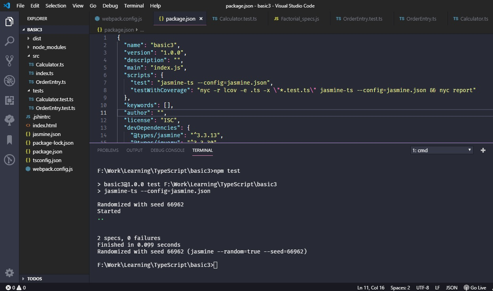

- Create an empty directory called 'sample'.
- Run following command to create 'package.json'.
D:\sample\npm init -y
- Run following command to create 'tsconfig.json'
D:\sample\tsc --init
To enable source map, uncomment "sourceMap": true," line
- We need to add 'ts-loader' as develpment dependency.
D:\sample\npm install --save-dev ts-loader
this will add following entry in package.json
"devDependencies":
{
"ts-loader": "^6.0.4"
}
- Create a directory 'src' in 'sample' folder. This folder will contain all the typescript source files.
- create 'index.ts' file in src folder. Add following code snippet in the file.
class Person {
constructor(private name: string) {
}
show() {
console.log("My name is " + this.name);
}
}
var abhay = new Person("Abhay");
abhay.show();
- Create 'webpack.config.js' in 'sample' folder. Add follwing configuration in the file.
const path = require('path');
module.exports = {
mode: 'development',
entry: './src/index.ts',
devtool: 'inline-source-map',
module: {
rules: [{
test: /\.tsx?$/,
use: 'ts-loader',
exclude: /node_modules/
}]
},
resolve: {
extensions: ['.tsx', '.ts', '.js']
},
output: {
filename: 'bundle.js',
path: path.resolve(__dirname, 'dist')
}
};
- Make sure you have webpack and typescript installed globally. If not, run following commands.
D:\sample\npm intall -g webpack --verbose
D:\sample\npm install -g typescript --verbose
- Webpack needs typescript module to transpile files.
We need to link global typescript module to this project. To do that, run following command,
D:\sample\npm link typescript
- Now you can run 'webpack' command to build the project.
D:\sample\webpack
this will create 'dist' folder in sample directory.
- Suppose, we want to just test class/function without transpiling entire source, we can install ts-node
globally.
ts-node will execute typescript source directly.
D:\sample\ts-node src/index.ts
- If you want to use jquery,
D:\sample\npm install --save-dev @types/jquery
-
Unit Testing
Create new directory 'tests' in root folder
Create a new test file called 'Calculator.test.ts'
import Calculator from '../src/Calculator';
describe('calculate', function () {
it('add', function () {
let result = Calculator.Sum(5, 2);
expect(result).toBe(6);
});
});
/* In src / Calculator.ts add following code, */
export default class calculator {
static Sum(a: number, b: number): number {
let c = a + b;
return c;
}
static Difference(a: number, b: number): number {
let c = a - b;
return c;
}
}
D:\sample\npm i -D jasmine jasmine-ts nyc ts-node typescript
D:\sample\npm i -D @types/jasmine
In package.json add following configuration
"scripts": {
"test": "jasmine-ts --config=jasmine.json",
"testWithCoverage": "nyc -r lcov -e .ts -x \"*.test.ts\" jasmine-ts --config=jasmine.json && nyc report"
}
Add jasmine.json at root directory
{
"spec_dir": "tests",
"spec_files": ["**/*[tT]est.ts"]
}
-
package.json will look similar to this,
{
"name": "basic3",
"version": "1.0.0",
"description": "",
"main": "index.js",
"scripts": {
"test": "jasmine-ts --config=jasmine.json",
"testWithCoverage": "nyc -r lcov -e .ts -x \"*.test.ts\" jasmine-ts --config=jasmine.json && nyc report"
},
"keywords": [],
"author": "",
"license": "ISC",
"devDependencies": {
"@types/jasmine": "^3.3.13",
"@types/jquery": "^3.3.30",
"jasmine": "^3.4.0",
"jasmine-ts": "^0.3.0",
"nyc": "^14.1.1",
"ts-loader": "^6.0.4"
}
}
To run the tests,
D:\sample\npm test
-
Folder structure will look similar to this,
